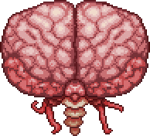

Мозг Ктулху появляется при разрушении 3 Багровых сердец. Эти сердца находятся в багрянце, окружены багровым камнем. Багровый камень можно сломать только с помощью кирки высокого уровня (Кошмарная кирка и Литая кирка), бура, бомб или динамита. При применении на багровом камне очищающего порошка, можно превратить его в камень. Также босса можно вызвать с помощью кровавого позвоночника. Мозг Ктулху можно вызвать только в багрянце.
Мозг Ктулху имеет только 1,000 HP, но он также имеет две формы: в первой форме мозг не наносит игроку урона (урон игроку наносят крадущиеся), а также мозг будет игнорировать весь урон который будет наносить ему игрок, пока мозг не перейдет во вторую стадию. Во второй стадии мозг уже будет телепортироваться, и пытаться таранить игрока. В отличии от других боссов, Мозг Ктулху не имеет устойчивости к откидыванию.